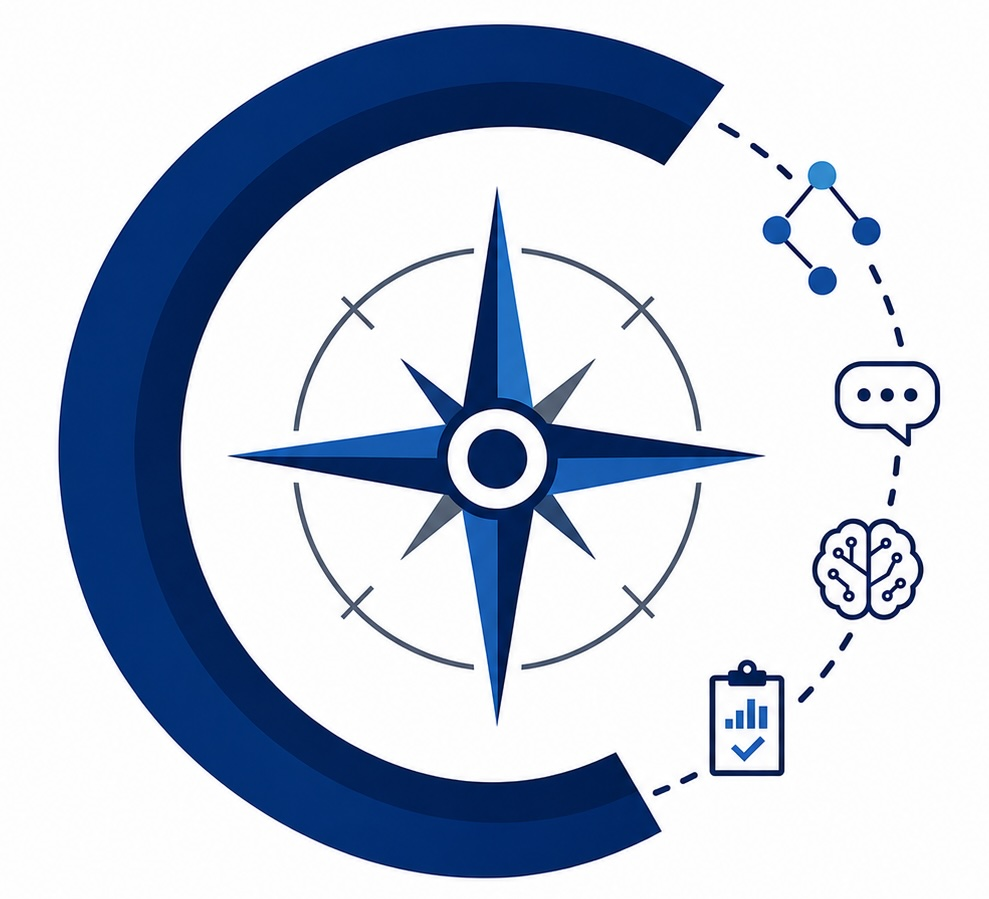

The COMPASS lab (Computational Outlooks on Multilingual Processing, Assessment, and Semantic Structures) is led by Professor Shira Wein.
COMPASS focuses on representing meaning across languages and model intepretability.
Currently, I am interested in developing and using formal semantic representations (such as Abstract
Meaning Representation and Uniform Meaning Representation) for computational applications and linguistic analyses, as well as examining and multilingual language data via interpretability approaches.
(ACL 2026) "Lost in Translation, and Found: Detecting and Interpreting Translation Effects"
(IJCNLP-AACL 2025: Outstanding Paper Award!) "Generating Text from Uniform Meaning Representation"
(ACL 2025) "Can Uniform Meaning Representation Help GPT-4 Translate from Indigenous Languages?"
(DMR 2025) "The Role of PropBank Sense IDs in AMR-to-text Generation and Text-to-AMR Parsing"
I will be hiring Post-Docs and Ph.D. students starting 2026! If you are looking to work with me in one of those capacities, you should send me an email detailing your interest in NLP research and your CV attached.
I am also happy to work with undergraduates and Master's students at USF.
Ellie Yang (2025-)
Undergraduate Research Assistant
Amherst College'27
NLP and Law
 Jiyuan Ji (2025-)
Undergraduate Research Assistant
Amherst College'28
NLP and AI Safety
Jiyuan Ji (2025-)
Undergraduate Research Assistant
Amherst College'28
NLP and AI Safety
 Weixin Lin (2026-)
Undergraduate Research Assistant
Amherst College'28
NLP and Human-Robot Interaction
Weixin Lin (2026-)
Undergraduate Research Assistant
Amherst College'28
NLP and Human-Robot Interaction
 Andrew Tremante
Collaborating Research Assistant (2026- )
Data Scientist at IBM
Text-to-SQL and NLP
Andrew Tremante
Collaborating Research Assistant (2026- )
Data Scientist at IBM
Text-to-SQL and NLP
 Prakhar Agrawal
Undergraduate Research Assistant (2026- )
Amherst College'27
Software Engineering and Financial Systems
Prakhar Agrawal
Undergraduate Research Assistant (2026- )
Amherst College'27
Software Engineering and Financial Systems
Anna Serbina, Amherst College'25 (2024-2025) → Ph.D. Computer Science, USC Information Sciences Institute
Reihaneh Iranmanesh, Amherst College'25 (2024) → Ph.D. Computer Science, Georgetown University
Emma Markle, Amherst College'26 (2024-2026) → Ph.D. Computer Science, Northeastern University
Ryan Ji, Amherst College'26 (2025-2026) → Product Engineer, Eudia (Legal AI)
Nathan Wolf, UMass Amherst'26 (2025-2026) → M.S. Computer Science, Cornell Tech
Javier Gutierrez Bach, Amherst College'26 (2025)
Mina Yang, Amherst College'27 (2025)
Bianca Delgado, Amherst College'27 (2025)
Thu Hoang, Amherst College'28 (2025-2026)